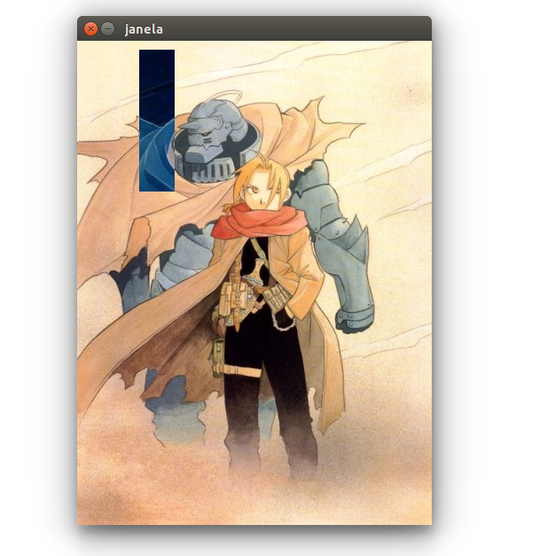
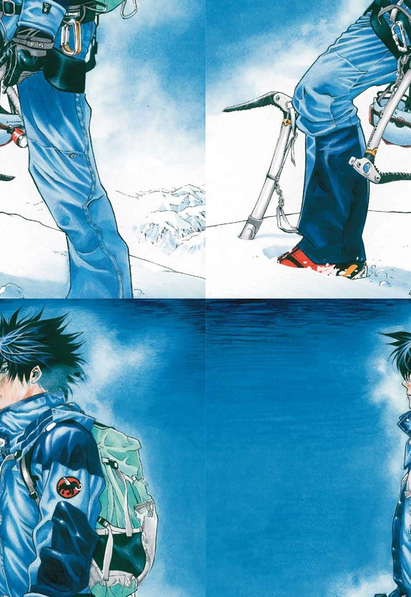

Processamento Digital de Imagens(DCA0445)
Daniel Brito Fernandes - Pablo Favero de Siqueira
Introdução
Esta página é destinada a apresentação de trabalhos realizado na disciplina de Processamento Digital de Imagens, cursada na Universidade Federal do Rio Grande do Norte (UFRN), ministrada pelo professor Agostinho de Medeiros Brito Junior, onde a disciplina é coordenada pelo departamento de Engenharia da Computação.
3. Manipulando pixels em uma imagem
3.2a Negativa de uma região da imagem
O exercício desenvolvido mostra a implementação do algoritmo regions.cpp, onde o mesmo solicita ao usuário a inserção de pontos iniciais e finais em coordenadas x e y, onde com esses valores é gerado um negativo na imagem desejada.
Com os valores conhecidos o algoritmo calcualar o inverso da imagem e mostra a imagem com a área desejada em negativo, para o exemplo foram usadas as coordenadas iniciais 10 para X e 70 para Y, as coordenadas finais foram 170 para X e 110 Y. Abaixo segue o código e a imagem resultado.
Código

Resultado:
3.2b Troca de Regiões
O exercicio solicita que devemos fazer a troca de posiçoes das regiões da foto, assim o algoritmo randomiza a altura e largura e assim separa as regiões. Segue abaixo o código e o resultado obtido.
Código
Foto Original

Resultado:
4. Preenchendo regiões
4.2a Preenchendo regiões
A representação das imagem variam entre 0 a 255, com isso para representar imagens com mas de 255 elementos ficar impossivel pois não vai ocorre mas niveis disponiveis para executar a rotulação. Uma possivel solução será altera o algoritmo floodFill onde ele vai identificar o número de niveis disponiveis.
4.2b Identificação
Usando o algoritmo apresentado conseguimos gera o resultado desejado no exercicio, abaixo esta o código comentado e o resultado obtido, onde no resultado os locais em preto significa os locais onde as bolhas tinham buracos.
Código

Resultado:

5. Manipulação de Histograma
5.2a Equalização de HIstograma
Para realização da atividade submetida desenvolvemos o algoritmo equalize.cpp, usando como base o conhecimentos do algoritmo.cpp descrito no tutorial, para captura da imagem foi utilizada uma webcam simples, presente em qualquer computador pessoal. Na imagem abaixo vai ser demostrado o nosso código onde mostra a realização do cálculo do histrogama da imagem original feito pela função calcHist() onde ele recebe alguns argumentos, depois do calculo do histograma e feita a equalização através da função equalizeHist(), onde é contem dois parâmetro onde o primeiro significa a matriz da imagem original e o segundo representa a imagem equalizada.
Segue abaixo o algoritmo equalize.cpp e os resultados.
Código


Resultado:
Original

Equalizada